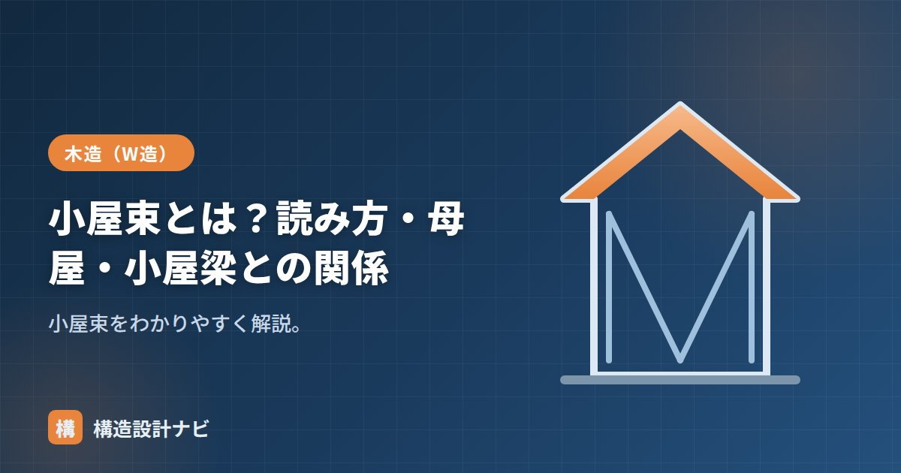

小屋束とは？読み方・母屋・小屋梁との関係

小屋束（こやづか）とは、和小屋で小屋梁の上に立て、母屋・棟木を支える短い垂直材のことです。屋根の骨組みである小屋組の中で、屋根荷重を最終的に小屋梁へ伝える中継ぎの役割を担う、木造の屋根まわりの基本部材です。
- 小屋束は小屋梁の上に立て、母屋・棟木を支える短い束
- 「垂木→母屋・棟木→小屋束→小屋梁→柱」の順に屋根荷重が伝わる
- 909mm程度の間隔で立て、雲筋かいで振れ止めする
読み方と役割
読み方は「こやづか」。小屋梁の上に垂直に立て、その上の母屋（もや）・棟木（むなぎ）を支えます。屋根の荷重を母屋から受け、小屋梁へ伝える中継ぎの役割です。「束（つか）」はもともと短い柱状の垂直材を指す言葉で、床下で使われる床束と同じ考え方の部材が、小屋組では小屋束として使われます。
母屋・小屋梁との関係
- 下：小屋梁が小屋束を受ける。
- 上：小屋束が母屋・棟木を支える。
この荷重の流れを支えているのが和小屋と呼ばれる小屋組の形式です。小屋梁を横架材として架け渡し、その上に小屋束を立てて屋根の傾斜や高さをつくるため、比較的シンプルな部材構成で複雑な屋根形状にも対応できます。
小屋束の種類と断面
棟木を支える最も高い位置の束を真束（しんづか）、その他の位置で母屋を支える束を単に小屋束と呼び分けることもあります。断面寸法は屋根の荷重や小屋梁の間隔に応じて決まりますが、一般的な住宅では105mm角程度の角材が使われることが多く、屋根の規模が大きくなるほど断面も大きくする必要があります。上下端は、小屋梁や母屋との接合部が抜けたりずれたりしないよう、ほぞ加工や金物によって固定するのが一般的です。
間隔と振れ止め
小屋束はおおむね909mm程度の間隔で立てます。背が高い束は横に倒れやすいため、雲筋かい（小屋筋かい）で束どうしをつないで振れ止めし、小屋組全体を安定させます。
小屋束は鉛直方向の荷重を支える部材であり、水平方向の力（地震・風）に抵抗する耐力要素ではありません。小屋組の水平剛性は、雲筋かいや水平構面、火打ちなど別の部材で確保する必要があり、小屋束だけで屋根の揺れを止められると誤解しないよう注意します。
Q1. 小屋束は途中で継いでもよいですか？
小屋束は基本的に1本の材で加工し、継手を設けないことが望ましいとされます。継手を設ける場合は、荷重の伝達に支障が出ないよう、金物で補強するなどの対策が必要です。
Q2. 洋小屋のトラス構造にも小屋束はありますか？
洋小屋のトラス構造にも束材が使われますが、和小屋の小屋束のように単純な圧縮部材として機能する場合と、トラスの一部として引張力を負担する場合があり、力の伝わり方が異なります。名称や役割の違いを区別して理解することが大切です。
天井裏に入って小屋組を見るとき、真っ先に目がいくのは小屋束の足元です。ほぞが抜けかけていたり雲筋かいが省略された物件を何度も見てきたので、鉛直材だからと安心せず振れ止めの有無を必ず確認するようにしています。
小屋束の位置と役割（図解）
小屋束が小屋組のどこに位置し、何を支えているのかを図で確認しましょう。
小屋組全体の中での位置づけ
小屋束は屋根荷重を伝える経路の一部です。各部材の役割を整理すると、小屋組の仕組みが見えてきます。
| 部材 | 役割 | 受ける力 |
|---|---|---|
| 垂木（たるき） | 屋根面を直接支える | 曲げ |
| 母屋（もや）・棟木 | 垂木を受ける | 曲げ |
| 小屋束 | 母屋・棟木を支え、小屋梁へ伝える | 圧縮（軸力） |
| 小屋梁 | 小屋束からの荷重を集めて柱・桁へ | 曲げ |
| 雲筋かい | 束どうしをつなぎ倒れを防ぐ | 軸力（引張・圧縮） |
小屋束は主に圧縮（軸力）を受ける部材です。曲げを受ける垂木・母屋・小屋梁とは力の受け方が異なります。ただし、細長い圧縮材は座屈のおそれがあるため、背の高い束では雲筋かいによる振れ止めが特に重要になります。屋根勾配が急で棟が高い建物では、真束が2m近くになることもあり、その場合の座屈と接合部の設計には注意が必要です。
まとめ
- 小屋束（こやづか）は小屋梁の上に立て母屋・棟木を支える短い束。
- 「垂木→母屋→小屋束→小屋梁→柱」で屋根荷重を伝える。
- 909mm程度の間隔で立て、雲筋かいで振れ止めする。
- 鉛直荷重を支える部材で、水平方向の耐力は雲筋かいなど別要素で確保する。